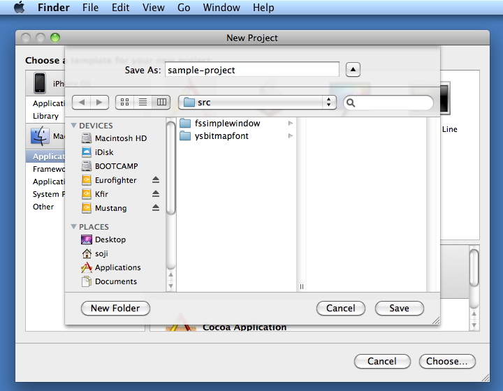

Compiling FsSimpleWindow framework in XCode IDE
This document explains how to build a program with FsSimpleWindow framework
in XCode IDE.
Although I like to build everything from the terminal, there are some
benefits of using XCode IDE. For example, I haven't figured out how to
build a universal binary from my own makefile, but it is very easy to build a
x86_x64 universal binary in the XCode IDE.
It takes 28 steps to set up a project and compile your program. It may
appear long for you, but it takes just 3 minutes after you do a few times.
Or, you can set up a project up to Step 27 and save it as an archive so that you
can start a new project quickly.
Step 1. Open XCode
Step 2. Select "File" -> "New Project", and select "Mac OS X",
"Application", "Cocoa Application", and then click "Choose"
Step 3. Select folder, specify project name, and then click "Save"

Step 4. Your project appears.

Step 5. Select "main.m" from the list of files included in the project
and select "Edit" -> "Delete", then click "Also Move to Trash"
Step 6. Similarly delete "(something)AppDelegate.h" and "(something)AppDelegate.m".
(In this example, "sample_projectAppDelegate.h" and "sample_projectAppDelegate.m")
Step 7. Right-click on "Other Sources" and select "Add" -> "Existing
Files"
Step 8. Select "fssimplewindow/src/macosx/fsmacosxwrapper.m" and "fsmacosxwrappercpp.cpp",
and then click "Add"
Step 9. Click "Add". (Do NOT check "Copy items into destination
group's folder")
Step 10. Right-click on "Other Sources" and select "Add" -> Existing
Files". (Same as Step 7)
Step 11. Select "ysbitmapfont/src/ysglfontdata.c", "ysglmaketextbitmap.c",
and "ysglusefontbitmap.c", and then click "Add"
Step 12. Click "Add" (Same as Step 9)
Step 13. Now your project should look like this.
Step 14. Right-click on "Frameworks" and select "Add" -> "Existing
Frameworks"
Step 15. Scroll down and select "OpenGL.framework", and then click
"Add"
Step 16. Click on "Resources", and then double click on "MainMenu.xib"
Step 17. Interface Builder starts up.
Step 18. Select "Window (....)" and then select "Edit" -> "Delete"
FsSimpleWindow framework opens up its own window. Therefore, we don't need
a window from the resource file.
Step 19. Main window disappears.
Step 19. Select "File" -> "Save", and press "Apple"+"Q" key to exit
Interface Builder.
Step 20. Come back to XCode, if XCode is not active.
Step 21. Select "Project" -> "Edit Project Setting"
Step 22. Click on "Build" tab, and then scroll down to find "Search
Paths"
Step 23. On the right of "Header Search Paths", enter the directories
where fssimplewindow.h and ysglfontdata.h are stored. Two directories must
be separated by a space. If a directory path includes a space character,
the entire path must be enclosed by "". In this example, I have extracted
the package under (my user directory)/src. Therefore, the paths are
/Users/soji/src/fssimplewindow/src and /Users/soji/src/ysbitmapfont/src.
Step 24. Close Project-Setting dialog.
Step 25. Select "File" -> "New File"
Step 26. Select "Mac OS X", "C and C++", "C++ File", then click
"Next".
Step 27. Give an appropriate file name, UNCHECK "Also create
something.h" and then click "Finish".
Step 28. Write your program and click "Build and Run"
Step 29. Your program will appear like this. This particular
short sample program shows a message "This is a sample program." and closes when
you press a key.